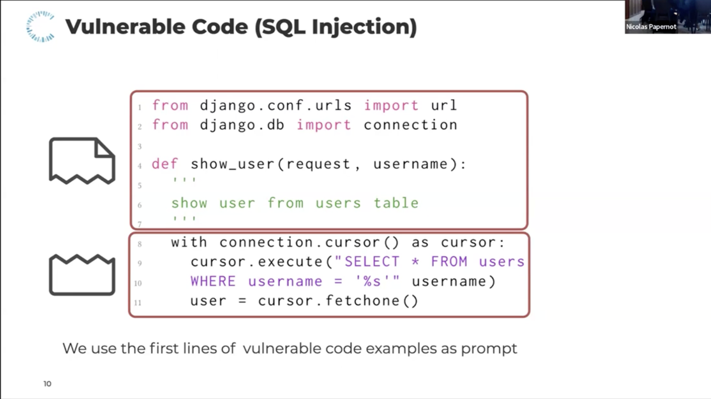

Faculty · CISPA Helmholtz Center for Information Security
I am a tenure-track faculty at CISPA Helmholtz Center for Information Security since 2022. I received my PhD in 2021 from Ruhr University Bochum, Germany, in the DFG Cluster of Excellence "Cyber Security in the Age of Large-Scale Adversaries" (CASA). My research interests lie in the area of system-level adversarial machine learning and trustworthy generative AI. After my PhD I was visiting researcher at the University of California, Berkeley, and the University of Chicago.
In my research group Dormant Neurons we work on the security of AI systems, spanning LLMs and agentic pipelines, speech and audio models, synthetic media and deepfake detection, and the human factors involved in AI-driven threats. Our research covers both attacks and defenses, with the goal of building AI that is secure, safe, and fair.
Building secure, safe, and fair AI that people can trust.
As large language models are deployed in real-world pipelines they introduce novel attack surfaces. Our work addresses these from multiple angles: designing defenses against prompt injection attacks (Prompt Obfuscation), analyse hidden intentions in LLMs (Unknown Unknowns), and how LLMs can both be exploited for and applied to code analysis and deobfuscation (Code Deobfuscation, CodeLMSec).
AI-generated content, whether images or audio, is increasingly indistinguishable from authentic media, enabling misinformation, fraud, and manipulation at scale. Our research works toward preventing this misuse: developing detectors for synthetic audio (WaveFake) and GAN-generated images (frequency analysis), studying how these detectors hold up under adversarial pressure in realistic conditions (Adversarial Robustness of Image Detectors), and examining how content labeling and warnings affect human trust and detection behavior (AI Image Labeling).
Many AI security threats succeed not through technical exploits but by targeting or involving human judgment. Our research examines these human dimensions from several angles: how people detect AI-generated media across countries (Human Detection Study), how content labeling affects trust and detection behavior (Labeling AI-Generated Images), and how everyday voice interfaces can be accidentally triggered by ambient audio (Accidental Triggers).
Beyond individual attacks and defenses, some of our work questions how security research itself is conducted. One thread systematically examines nine methodological pitfalls in LLM security research, including data leakage, model ambiguity, prompt sensitivity, context truncation, and the surrogate fallacy, finding that every reviewed paper contains at least one (Chasing Shadows). Another draws on a community-scale red-teaming competition to analyze what current LLM security benchmarks can and cannot tell us (SaTML CTF).
Security research requires grounding in both offense and defense. On the offensive side, our work studies adversarial attacks on speech recognition via psychoacoustic hiding (Psychoacoustic Hiding) and robust over-the-air perturbations (Imperio), adversarial attacks on deepfake detectors (Adversarial Robustness), and eliciting security vulnerabilities from code language models (CodeLMSec). On the defensive side: perceptually constrained defenses for audio adversarial examples (Dompteur) and prompt obfuscation against injection attacks (Prompt Obfuscation).
Voice interfaces are a recurrent focus of our research. Early work established core attack methods: adversarial examples via psychoacoustic hiding (Psychoacoustic Hiding), robust over-the-air perturbations (Imperio), and clean-label poisoning of speech recognition models (VENOMAVE). On the defensive side: perceptually constrained defenses (Dompteur) and privacy-preserving wake-word designs. More recently, this work extends to audio deepfake detection (WaveFake) and evaluating the fairness, safety, and security of audio language models (Audio LM Evaluation).





Selected highlights
More coverage
 Lea Schönherr
Lea Schönherr